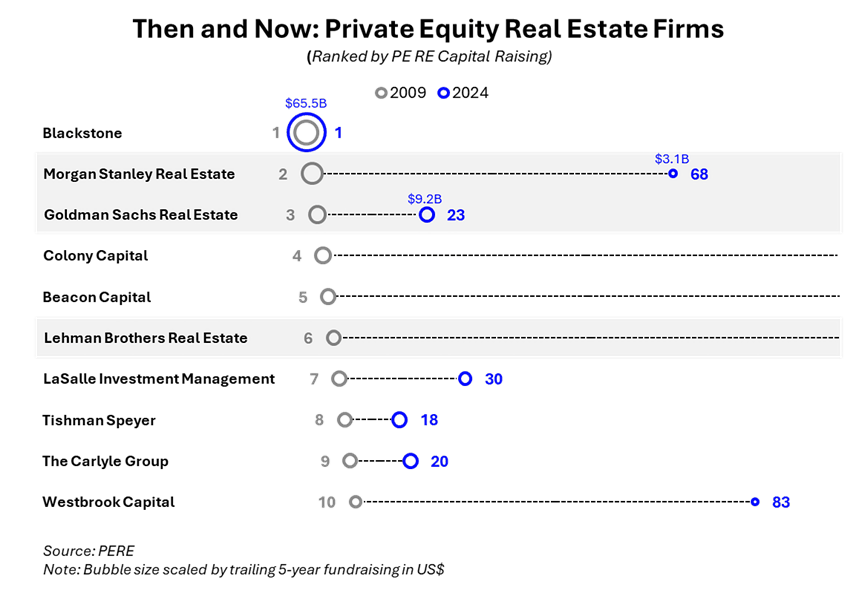
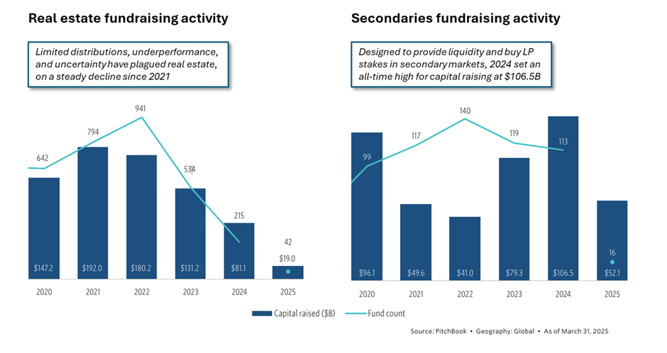

Out of the Light
How risk migrated from bank marks to insurance clocks
In the early 2000s, the head table in private real estate sat largely inside the banks. Morgan Stanley and Goldman set the terms, the models ran overnight, and the Lucite deal toys were piled high. Then Lehman sank and the GFC hit. Post-crisis rules fenced in the balance sheets regulators could directly supervise. Money migrated to platforms outside that perimeter, and to insurers (who slowed the clocks).

While commercial real estate was never the whole of private markets, it has been a revealing lens on the change (and the lens through which I watched it). The first shift was equity. Post-GFC constraints reduced the ability of banks to sponsor and own private equity funds inside the prudential perimeter, so the equity platforms and talent moved to independent managers. Banks kept lending, arranging, and syndicating, but they no longer captured the carry or controlled the exits [1]. Distribution economics also evolved, pushing more price discovery and origination power toward the buy-side.
The 2010s then locked in a second force. Low rates and repeated central bank balance sheet programs, QE and reinvestment, flattened term premia, so long-term institutional investors reached for spread. Intermediation migrated from regulated bank balance sheets to private capital platforms that could warehouse illiquidity. Private credit scaled alongside buyout, supported by capital sources that tolerate slower value recognition, semi-liquid vehicles with redemption gates that kept AUM steadier, and insurer partnerships that prefer steady spread to daily marks.
Covid delivered maximal central bank support, followed by realized inflation and the fastest hiking cycle in decades. Duration and deposit mismatches surfaced at a few US banks - a combination of large unhedged books from years of stability and concentrated uninsured funding - and supervisors stepped in with targeted backstops. Scrutiny tightened, but the plumbing was already different. The locus of risk and funding had already edged into dimmer light.
Banks have not disappeared, but in many mid-market and bespoke situations they now trail on speed, certainty, and flexibility. Private credit has crowded into bank turf, feeding on fund sponsors’ unwillingness to crystallize losses - offering bridge-to-somewhere financing while GPs wait for a better tape, and LPs grow antsy. With higher for longer rates, many private capital platforms are simultaneously nursing pre-2020 vintages and defending marks, which explains weak primary fundraising, a booming GP-led secondary market, and LP-financing niches.

The decisive funding engine beneath this is insurance. Private equity sponsors have acquired or partnered with life insurers, reinsured liabilities to affiliates in offshore jurisdictions (e.g. Bermuda), and operated under frameworks that allow assets and liabilities to be valued on different clocks. Within that headroom, massive portfolios have tilted away from vanilla public bonds toward higher-spread private credit and structured credit, often with related-party exposure and always slower mark-to-market. The point is not evasion, it is difference. A shift from fast marks to slower clocks that has changed how risk is warehoused and when it is recognized in 2025.
Secondary markets, continuation vehicles, and NAV lines redistribute risk, they don’t eliminate it. They transfer it to investors with slower liability clocks and to balance sheets designed to live with illiquidity. That is why today’s story is less about whether something breaks, and more about how pressure travels through subscription lines, loan warehouses, bank credit, and affiliated reinsurers before losses are formally recognized.
[1] In 2009, Blackstone’s capital raising was only 25% more than Morgan Stanley, but 15 years later their fundraising total was more than 20x (and 7x Goldman Sachs)